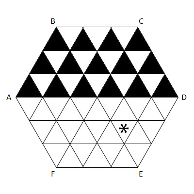

Project Euler 702
Project Euler 702
题目
Jumping Flea
A regular hexagon table of side length \(N\) is divided into equilateral triangles of side length \(1\). The picture below is an illustration of the case \(N = 3\).

An flea of negligible size is jumping on this table. The flea starts at the centre of the table. Thereafter, at each step, it chooses one of the six corners of the table, and jumps to the mid-point between its current position and the chosen corner.
For every triangle \(T\), we denote by \(J(T)\) the minimum number of jumps required for the flea to reach the interior of \(T\). Landing on an edge or vertex of \(T\) is not sufficient.
For example, \(J(T) = 3\) for the triangle marked with a star in the picture: by jumping from the centre half way towards \(F\), then towards \(C\), then towards \(E\).
Let \(S(N)\) be the sum of \(J(T)\) for all the upper-pointing triangles \(T\) in the upper half of the table. For the case \(N = 3\), these are the triangles painted black in the above picture.
You are given that \(S(3) = 42, S(5) = 126, S(123) = 167178\), and \(S(12345) = 3185041956\).
Find \(S(123456789)\).
解决方案
1. 坐标系与计数对象
采用一组夹角为 \(60^\circ\) 的二维基底建立坐标系，记基向量为 \(e_1,e_2\)，使单位小三角形的顶点都对应到整数格点 \((i,j)\)。再将整个图形按比例缩放，使正六边形边长归一为 \(1\)；此时原题中的单位小三角形边长变为 \(1/N\)，其顶点坐标可写成 \((x/N, y/N)\) 的形式。
题目只要求上半部分”的上指三角形。它们可以用整数对 \((x,y)\) 统一编号为：\(0 \le x < N,-N \le y < N - x.\)并取该上指三角形的三个顶点为\((x/N, y/N),((x+1)/N, y/N),(x/N, (y+1)/N).\)于是上半部分上指三角形总数为\(\displaystyle T_s=\sum_{x=0}^{N-1}(2N-x)=2N^2-\frac{N(N-1)}{2}=\frac{N(3N+1)}{2}.\)
我们先郑敏引理 1：第 \(d\) 步后跳蚤位置必为\(\left(\dfrac{a}{2^d},\dfrac{b}{2^d}\right),a,b\in\mathbb Z,\)并且仍在六边形内部。
证明：初始中心在整数格点（可取为 \((0,0)\)）。每次更新 \(P \leftarrow (P+V)/2\)，其中六个顶点 \(V\) 都是整数格点（在该坐标系下）。若 \(P\) 的分母为 \(2^d\)，则 \((P+V)/2\) 的分母为 \(2^{d+1}\) 且分子仍为整数；归纳后引理不难得证。因此，第 \(d\) 步能落到的点都在 \(2^{-d}\) 的细网格上。
设 \(R(d)\) 为：在 不超过 \(d\) 步内可以进入内部的（上半部分上指）小三角形的个数。对任意三角形 \(T\)，若 \(J(T)=j\)，则在 \(d=0,1,\dots,D\) 中，满足\(T\) 在 \(\le d\) 步可达的 \(d\) 的个数为 \(\max(0, D-j+1)\)；等价地\(\displaystyle J(T)=\sum_{k=0}^{D}\mathbf 1[J(T)>k].\)对所有三角形求和得
\[ S(N)=\sum_T J(T) =\sum_{k=0}^{D}\bigl(T_s-R(k)\bigr) = T_s(D+1)-\sum_{k=0}^{D}R(k). \]
这里 \(D = \lfloor\log_2 N\rfloor+1\)，因此 \(2^{D-1} \le N < 2^D\)。并且当 \(d=D+1\) 时网格步长 \(1/2^{D+1} < 1/(2N)\)，每个边长 \(1/N\) 的小三角形内部必含一个 \(2^{-(D+1)}\) 格点，从而保证 最大 \(J(T) \le D+1\)，上式取 \(k=0,\dots,D\) 足够。另外很容易验证 \(R(0)=R(1)=0\)（中心及一步的 6 个中点都落在若干网格边上，不会进入任何小三角形内部），因此只需计算 \(R(d),(d\ge2)\)。
令 \(m=2^d\)。从几何对称可将上半部分分解成一个菱形区域和两个全等三角区域。在其中一个三角区域（记作 \(OCD\)）内，第 \(d\) 步可达点与整数对 \(0<a<b<m\) 一一对应，并且该点落入某个小三角形的上/下朝向只由比较两个模值决定：\((aN\bmod m),(bN\bmod m).\)
当 \(\gcd(N,m)=1\) 时（本题 \(N\) 为奇数，\(m\) 为 2 的幂，必互素），序列\(s_a = (aN\bmod m) (a=0,1,\dots,m-1)\)是 \(0,\dots,m-1\) 的一个排列，因此不会出现相等。
在 \(d<D\)（也即 \(m<2^D\le2N\) 且实际上 \(m\le N\)）时，网格还不够细，每个小三角形至多包含一个这样的可达点，于是\(\le d\) 步可达的小三角形数可以直接通过统计这些比较关系得到。
把 \(OCD\) 中的上指小三角形涂成黑，下指涂成白。定义\(B(d)\)：在 \(OCD\) 中 \(\le d\) 步可达的黑三角形数\(W(d)\)：在 \(OCD\) 中 \(\le d\) 步可达的白三角形数
由上面的比较规则可知：对每个 \(0<a<b<m\)，它贡献到黑/白取决于 \(s_a<s_b\) 或 \(s_a>s_b\)。因此 \(W(d)\) 恰为排列 \((s_1,s_2,\dots,s_{m-1})\) 的逆序对数：
\[ f(N,m)=\#\{(a,b):1\le a<b\le m-1,s_a>s_b\}. \]
而总对数为 \(C(m-1,2)=(m-1)(m-2)/2\)，故 \[ B(d)=\frac{(m-1)(m-2)}{2}-f(N,m). \]
接下来利用上半部分与 \(OCD\) 的拼接关系（两个 \(OCD\) 对称复制 + 中间菱形区域的朝向互换），可以推出上半部分在 \(\le d\) 步可达的上指三角形数为
\[ R(d)=2B(d)+W(d) = (m-1)(m-2)-f(N,m). \]
记\(g(N,m)=(m-1)(m-2)-f(N,m),\)则对 \(2\le d\le D-1\) 有\(R(d)=g(N,2^d).\)
令 \(m=2^d\)。在前面的讨论中，当 \(d<D\) 时（即 \(m\le N\)），从参数对 \(0<a<b<m\) 得到的可达点落在细网格（步长为 \(1/m\)）上，并且每个目标小三角形内部至多出现 1 个这样的点，因此用 \(g(N,m)\) 统计已被命中的上指小三角形个数没有问题。
但当 \(d=D\) 时，\(m=2^D\) 满足\(N<m<2N.\)此时细网格的步长 \(1/m\) 已经比 \(1/N\) 只小一倍以内，因此一个边长为 \(1/N\) 的小三角形内部不再保证至多一个点。更具体地说，这时同一个小三角形内部可能出现3 个可达点（而不会更多）。
这会导致前文节中用 \(g(N,m)\) 得到的数量不再等于 \(R(D)\)，因为 \(g(N,m)\) 的构造本质上是在统计由参数对 \((a,b)\) 产生的命中贡献；若同一小三角形内部有 3 个点，那么它会被计为次，而在 \(R(D)\) 中它只应该算作 1 个 已命中的小三角形，因此每出现这样一个小三角形，就会多算 \(2\)。
设\(X\)表示在 \(d=D\) 时，内部恰有 3 个可达点的上指小三角形个数。那么就有\(R(D)=g(N,2^D)-2X.\)因此关键变成：如何计算 \(X\)。
记\(m=2^D, m'=m-N=2^D-N.\)由于 \(N<m<2N\)，所以有 \(0<m'<N\)。
这里的几何本质是：当把边分成 \(m\) 等分（对应步长 \(1/m\) 的细网格）与边分成 \(N\) 等分（原题小三角形网格）叠加时，\(m\) 比 \(N\) 多出来的那部分分辨率正好由差值 \(m-N=m'\) 控制。也就是说，最细层中那些发生三点重叠的位置，不是随机出现的，而是由这部分多出来的细分线形成的一套拍频图样决定；这套图样与模数 \(m'\) 的同类计数问题完全同构。
换句话说：在模数 \(m=2^D\) 的最细层里，某个上指小三角形出现 3 点重叠；当我们把相对于原网格多出来的细分部分单独抽出来看时，它对应于模数 \(m'=2^D-N\) 的一处普通命中；这种对应是逐一配对的（既不会遗漏，也不会重复）。因此，\(X=g(N,m')=g(N,2^D-N).\)
将上式代回 \(R(D)=g(N,2^D)-2X\)，得到\(R(D)=g(N,2^D)-2g(N,2^D-N).\)这就是最细层需要的修正：主项仍是 \(g(N,2^D)\)，但要减去同一三角形被三次计入带来的重计数。
由\(\displaystyle S(N)=T_s(D+1)-\sum_{k=0}^{D}R(k),\)再结合\(R(0)=R(1)=0\)；对 \(2\le d\le D-1\)，有 \(R(d)=g(N,2^d)\)；对 \(d=D\)，有\(R(D)=g(N,2^D)-2g(N,2^D-N),\)整理可得
\[ S(N)=\frac{N(3N+1)}{2}(D+1) -\sum_{d=2}^{D} g(N,2^d) +2g(N,2^D-N) \]
直接对长度 \(m\) 的排列做逆序对统计是 \(O(m \log m)\)，而本题需要的 \(m\) 较大，必须用数论递推。
对互素的正整数 \(x,m\)，定义函数 \(f(x,m)\) 为序列 \(\bigl(ax\bmod m\bigr)_{a=1}^{m-1}\) 的逆序对数，即\(f(x,m)=\#\{(a,b)\mid 1\le a<b\le m-1,(ax\bmod m)>(bx\bmod m)\}.\)
下面设\(m=tx+y, 0<y<x.\)
我们将证明引理2：\(f(x,m)\)的递推式为 \[ f(x,m)=\frac{t(t+1)x(x-1)}{4}+(t+1)f(x,y)-tf(x,x-y). \]
证明如下：设\(s_a=ax\bmod m, a=0,1,\dots,m-1.\)由于 \(\gcd(x,m)=1\)，除 \(a=0\) 外不会出现 \(s_a=0\)，因此把 \(a=0\) 项加入序列不改变逆序对数，仍可用来计算 \(f(x,m)\)。
令\(m=tx+y, 0<y<x.\)按模 \(x\) 的余数把值域 \(0,1,\dots,m-1\) 分成 \(x\) 条递增子序列：
- 对 \(0\le r<y\)，长度为 \(t+1\)：\(L_r=(r,r+x,\dots,r+tx);\)
- 对 \(y\le r<x\)，长度为 \(t\)：\(M_r=(r,r+x,\dots,r+(t-1)x).\)
子序列内部无逆序对，因此逆序对全部来自不同子序列之间。
取基准值\(\dfrac{t(t+1)}{2}\)作为任意一对子序列的基础贡献。
则逐类比较可得：一长一短序列：贡献恒为\(\frac{t(t+1)}{2};\)两长序列：若相对顺序颠倒，则比基准多\(t+1;\)两短序列：若按自然顺序出现，则比基准少\(t.\)
总共有 \(\dbinom{x}{2}\) 对子序列，因此先加上统一基准总量\(\dbinom{x}{2}\dfrac{t(t+1)}{2}=\dfrac{t(t+1)x(x-1)}{4}.\)记\(P\) 为长序列之间相对顺序颠倒的对子数；\(Q\) 为短序列之间按自然顺序出现的对子数。
于是
\[ f(x,m)=\frac{t(t+1)x(x-1)}{4}+(t+1)P-tQ. \]
把每条子序列用其首项（即模 \(x\) 的余数）标记。它们在序列 \((s_a)\) 中出现的顺序可写为\(\pi_q=(-qy)\bmod x, q=0,1,\dots,x-1.\)
因此长序列对应首项集合 \(\{0,1,\dots,y-1\}\)；短序列对应首项集合 \(\{y,y+1,\dots,x-1\}\)。
将长序列单独抽出，按首项自然顺序比较，其逆序计数正是\(P=f(x,y).\)同理，将短序列首项整体减去 \(y\) 后，得到\(Q=f(x,x-y).\)
代回上式，得到\(f(x,m)=\dfrac{t(t+1)x(x-1)}{4}+(t+1)f(x,y)-t,f(x,x-y).\)引理得证。
代码
1 | from functools import lru_cache |